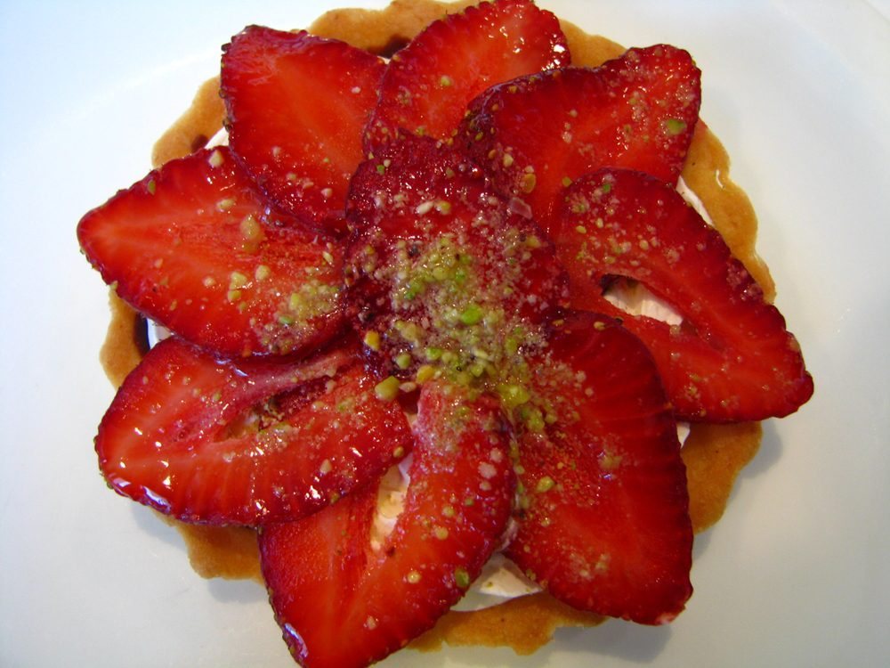

12時
店のこと
お店について確認できているのは、所在地とInstagramのアカウントだけです。
確認できていること
- 店名は「カフェ アシェット assiette」、業種はカフェ
- 所在地は長野県伊那市西町5294-4(〒396-0026)
- 電話番号はなし。連絡はInstagramから
- 営業時間・定休日・メニュー・価格・ご予約・駐車場は準備中

想像してみる
皿の上の12時
これは制作側の連想です。お店の理念・屋号の由来とは無関係で、由来を述べるものでもありません。「assiette」はフランス語で「皿」の意味の語として知られているため、制作側がページを「皿の文字盤」に見立てました。
以下は制作側が想像して書いた遊びで、お店の実際の様子・メニューとは関係ありません。
皿の12時の位置は、いちばん奥、向こう側です。まだ何も置かれていない皿を前にすると、これから何がのるのだろう、と少し背筋が伸びます。まだ空白のこのページも、お店から写真や言葉が届いたら、その位置に置かれていきます。

